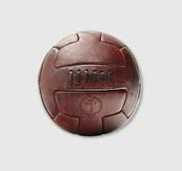

Despre Fotbal
Fotbalul este sportul cel mai popular din lume, cu peste 4 miliarde de fani la nivel global și milioane de jucători amatori și profesioniști.
Istoria Fotbalului
Fotbalul modern s-a născut în Anglia, în secolul al XIX-lea. Primele reguli au fost oficializate în 1863 când s-a înființat Asociația Engleză de Fotbal (The Football Association - FA). Înainte de aceasta, existau diferite forme locale de jocuri cu mingea, inclusiv în China antică (Jianzi) și în Grecia sau Roma antică.
Pe măsură ce fotbalul a câștigat popularitate, în 1904 a fost creată FIFA (Fédération Internationale de Football Association) pentru a reglementa competițiile internaționale și pentru a standardiza regulile.
Regulile de bază ale fotbalului
- Două echipe a câte 11 jucători
- Durata unui meci este de 90 de minute, împărțită în două reprize de 45 de minute
- Scopul este să marchezi goluri în poarta adversă folosind în principal picioarele
- Golurile pot fi anulate dacă mingea iese în afara terenului sau dacă există faulturi
- Jucătorii nu au voie să atingă mingea cu mâna, cu excepția portarului în propria careu
Dezvoltarea fotbalului în lume
Fotbalul a devenit rapid un fenomen mondial, cu ligi profesioniste în aproape toate țările. Evenimente ca Cupa Mondială FIFA atrag miliarde de telespectatori și creează momente istorice în sport.
În România, fotbalul a început să se dezvolte la începutul secolului XX, iar echipe precum Steaua București și Dinamo București sunt printre cele mai cunoscute.
Curiozități despre fotbal
- Cel mai rapid gol înregistrat a fost marcat în doar 2 secunde.
- Primul Campionat Mondial a avut loc în 1930, în Uruguay.
- Brazilia este singura echipă care a participat la toate edițiile Cupei Mondiale.
- Fotbalul este singurul sport care poate fi jucat oficial și pe plajă, în sală sau pe teren normal.
🯠Roata Fotbalului
Apasă pe buton pentru a descoperi o echipă legendară la întâmplare!
Video despre Fotbal
Urmărește acest videoclip care surprinde istoria, emoțiile și momentele magice ale fotbalului: